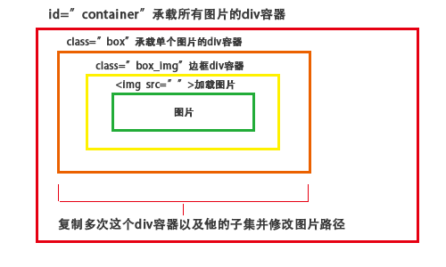

设置css样式
1.首先用通配符"*"来设置页面中所有Html标签的所有内边距padding:0px和外边距margin:0px,
选用通配符是因为它的优先级比所有其他选择器都要低（id选择器>类选择器>Html选择器>通配符选择器）
2.设置id="container"相对定位，
3.设置class="box"的div容器外边距padding:5px，可以得到两种图片间的距离为10px,设置浮动float:left为向左浮动，让它一次布局排开
4.设置class="box_img"外边距padding和边框border和阴影box-shadow圆角border-radius的效果，
5.设置图片的宽度width:150和高度height:auto自适应
示例： 